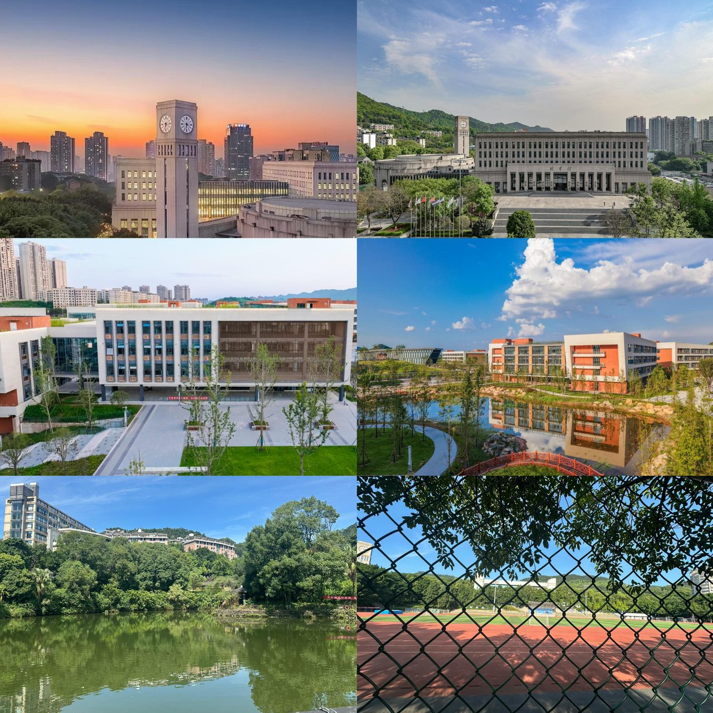

学姐一眼带你认 CTBU
全校占地 2896 亩、3 个校区，主校区在南岸区（主城核心）。2024 年刚获批博士授予单位，本-硕-博全链条贯通。简单说：这是一所以财经为底色、商科为王牌、新工科快速崛起的综合性大学。
一、校区与校园环境
CTBU 有三个校区，新生最关心的就是"我到底在哪个校区"。先给你一个整体印象👇
南岸校区（含兰花湖片区）—— 主校区
本科生主校区，重庆"十佳园林式校园"，依山临湖。钟楼、翠湖是校园地标，拍照超出片。兰花湖片区主要安置大一新生，配套全新宿舍与教学楼，步行 10 分钟可达主校区。
茶园校区 —— 工科新校区
工科、产教融合新校区，2025 年正式启用，紧邻重庆经开区产业集群。全新平地校园，不爬坡，硬件全校顶配。

二、师资与办学规模
学校师资体量在市属高校里算得上厚实：
- 教职工 2406 人，专任教师 1700+ 人，700 余人拥有博士学位，高级职称近 800 人
- 配备院士工作站、国家级人才、国务院特殊津贴专家等高层次师资团队
- 下设 19 个教学学院，全日制在校生 3 万余人，面向全国 31 省市及港澳台招生
三、学科实力（核心优势）
这是 CTBU 真正能打的底盘，学姐给你划重点：
- 2 个重庆市一流学科：应用经济学（全市第一）、工商管理学（全市第二）；14 个市级重点学科
- 3 个市级"人工智能+"交叉学科群：智能金融、智能会计、智能商务
- 4 个学科进入 ESI 全球前 1%：工程学、化学、材料科学、环境/生态学
- 20 个国家级一流本科专业（王牌：会计学、审计学、金融学、经济学、工商管理、市场营销等）；29 个市级一流专业
- 特色方向：ACCA 会计班、金融科技实验班、大数据、数字经济、绿色低碳产教融合专业群
四、王牌优势专业分类
不知道自己专业算不算王牌？对照下面看看👇
1. 财会类（录取分最高 · 校内金字招牌）
会计学、审计学、财务管理；对接 CPA、ACCA 体系，本地会计师事务所、国企财务、税务系统就业优势极强。
2. 经济金融类（博士点支撑）
金融学、经济学、投资学、金融工程；对接重庆西部金融中心，银行、证券、保险、国企投融资主力输出专业。
3. 工商管理类
工商管理、人力资源管理、市场营销、旅游管理，企业管理、互联网运营、公考热门选择。
4. 特色交叉 / 新工科
大数据管理、人工智能、环境工程、食品科学与工程、影视编导、视觉传达设计。
五、办学特色与就业
- 办学模式：大商科 + 新工科融合发展，经管为核心，理工、文法、艺术协同发展，贴合重庆数字经济、现代服务业产业需求
- 对外交流：中俄"长江—伏尔加河"高校联盟、中波大学联盟成员，开设中外合作办学、交换生、国际会计项目
- 就业去向：毕业生主要流向重庆及西南地区银行、会计师事务所、国企、政府财税经济部门、互联网、制造业企业；财经类专业考公、考研、进头部金融机构比例常年位居市属高校前列
六、配套资源
- 图书馆馆藏丰富，财经类文献馆藏重庆领先
- 校内翠湖、兰花湖、多处休闲步道，散步遛弯很舒服
- 校园配套超市、食堂、运动场齐全，生活便利度高
学姐碎碎念
选学校不只是看排名，更要看"这个学校的优势跟我的方向匹不匹配"。如果你是经管类、财会类方向，CTBU 在重庆乃至西南的认可度是真金白银的。想了解更多细节，继续往下看校区分配、教学楼、寝室、食堂的详细攻略吧～